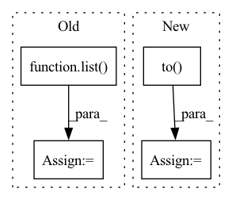

Pattern ID :16540
Before Change
) //// compute loss
pred_val = pred >= 0.5 //// get predictions
y_true += list(targets.int())
y_pred += list( pred_val.data.int().detach().cpu().numpy())
total_loss += loss
acc = accuracy_score(y_true, y_pred) //// computing accuracy using sklearn"s function
After Change
sent1.to(device),
sent2.to(device),
sents1_len.to(device),
sents2_len.to( device) ,
)
//// compute loss
loss = criterion(
pred.to(device), torch.autograd.Variable(targets.float()).to(device)
)
y_true += list(targets.float())
y_pred += list(pred.data.float().detach().cpu().numpy())
total_loss += loss
//// computing accuracy using sklearn"s function
acc = r2_score(y_true, y_pred)In pattern: SUPERPATTERN
Frequency: 5
Non-data size: 4
Instances Fragment ID: 55688528
Project Name: shahrukhx01/siamese-nn-semantic-text-similarity
Commit Name: f3d054dd14ef532c408b1306c3341115777ac22f
Time: 2021-12-30
Author: sk28671@gmail.com
File Name: siamese_sts/trainer/train.py
M Class Name: AnonimousClass
N Class Name: AnonimousClass
M Method Name: evaluate_dev_set(5)
N Method Name: evaluate_dev_set(5)
M Parent Class:
N Parent Class:
M File Name: siamese_sts/trainer/train.py
N File Name: siamese_sts/trainer/train.py
M Start Line: 78
M End Line: 95
N Start Line: 91
N End Line: 116
Before Change
_output = self._model.pool(feats)
_output = self._model.flatten(_output)
_output = self._model.classifier(_output)
grad: torch.FloatTensor = list( torch.autograd.grad(_output[:, _class], feats)) [0] // (N,C,H,W)
feats.requires_grad_(False)
weights: torch.FloatTensor = grad.mean(axis=-1, keepdim=True).mean(axis=-1, keepdim=True) // (N,C,1,1)
heatmap: torch.FloatTensor = (feats * weights).sum(dim=1).clamp(0) // (N,H,W)
heatmap = np.array(heatmap.cpu())
heatmap = cv2.resize(heatmap[0], _input.shape[2:])
heatmap = heatmap - np.min(heatmap)After Change
def grad_cam(self, _input: torch.FloatTensor, _class: List[int]) -> np.ndarray:
if isinstance(_class, int):
_class = [_class] * len(_input)
_class = torch.tensor(_class).to( _input.device)
feats = self._model.get_fm(_input).detach() // (N,C,H,W)
feats.requires_grad_()
_output: torch.FloatTensor = self._model.pool(feats)
_output: torch.FloatTensor = self._model.flatten(_output) Fragment ID: 55688436
Project Name: ain-soph/trojanzoo
Commit Name: 2bf7c2a2e8acba2592ee17d60d1a59b7bd1bbfe5
Time: 2020-11-24
Author: ain-soph@live.com
File Name: trojanzoo/model/imagemodel.py
M Class Name: ImageModel
N Class Name: ImageModel
M Method Name: grad_cam(3)
N Method Name: grad_cam(3)
M Parent Class: Model
N Parent Class: Model
M File Name: trojanzoo/model/imagemodel.py
N File Name: trojanzoo/model/imagemodel.py
M Start Line: 206
M End Line: 222
N Start Line: 190
N End Line: 212
Before Change
pred_val = pred >= 0.5 //// get predictions
y_true += list(targets.int().numpy()) //// accumulate targets from batch
y_pred += list(
pred_val.data.int().detach().cpu().numpy()
) //// accumulate preds from batch
total_loss += loss //// accumulate train loss
acc = accuracy_score(After Change
model.zero_grad()
//// perform forward pass
pred = model(
sent1.to( device) ,
sent2.to(device),
sents1_len.to(device),
sents2_len.to(device),
)
//// compute loss
loss = criterion(
pred.to(device), torch.autograd.Variable(targets.float()).to(device)
)
//// perform backward pass
loss.backward()
//// update weights
optimizer.step()
//// accumulate targets from batch
y_true += list(targets.float().numpy())
//// accumulate preds from batch
y_pred += list(pred.data.float().detach().cpu().numpy())
//// accumulate train loss
total_loss += loss Fragment ID: 55688470
Project Name: shahrukhx01/siamese-nn-semantic-text-similarity
Commit Name: f3d054dd14ef532c408b1306c3341115777ac22f
Time: 2021-12-30
Author: sk28671@gmail.com
File Name: siamese_sts/trainer/train.py
M Class Name: AnonimousClass
N Class Name: AnonimousClass
M Method Name: train_model(6)
N Method Name: train_model(6)
M Parent Class:
N Parent Class:
M File Name: siamese_sts/trainer/train.py
N File Name: siamese_sts/trainer/train.py
M Start Line: 16
M End Line: 47
N Start Line: 16
N End Line: 59
Before Change
start_epoch = 0
model = SSD300(n_classes=n_classes)
// Initialize the optimizer, with twice the default learning rate for biases, as in the original Caffe repo
biases = list()
not_biases = list()
for param_name, param in model.named_parameters():
if param.requires_grad:
if param_name.endswith(".bias"):After Change
// Move to default device
model = model.to(device)
criterion = criterion.to( device)
// Custom dataloaders
train_dataset = PascalVOCDataset(data_folder,
split="train", Fragment ID: 55688538
Project Name: datawhalechina/dive-into-cv-pytorch
Commit Name: 30c9eaea70bab21865d2a81530629b956074f742
Time: 2020-10-11
Author: anshengmath@163.com
File Name: code/chapter03_object_detection_introduction/a-PyTorch-Tutorial-to-Object-Detection-master/train.py
M Class Name: AnonimousClass
N Class Name: AnonimousClass
M Method Name: main(0)
N Method Name: main(0)
M Parent Class:
N Parent Class:
M File Name: code/chapter03_object_detection_introduction/a-PyTorch-Tutorial-to-Object-Detection-master/train.py
N File Name: code/chapter03_object_detection_introduction/a-PyTorch-Tutorial-to-Object-Detection-master/train.py
M Start Line: 38
M End Line: 82
N Start Line: 35
N End Line: 42
Before Change
compressed_st = {"state_dict": {}}
layers = list( st["state_dict"].keys())
print("getting compression")
for name in layers:
// print(each)After Change
from diffusers import StableDiffusionPipeline
compressed_key = "unet"
compressed_st = {compressed_key: {}}
pretrained_st = StableDiffusionPipeline.from_pretrained(ckpt, torch_dtype=torch.float16).to( "cuda")
pretrained_st = pretrained_st.unet.state_dict()
if "modifier_token" in st:
compressed_st["modifier_token"] = st["modifier_token"]
st = st["unet"] Fragment ID: 55688479
Project Name: adobe-research/custom-diffusion
Commit Name: 5cd1e9c869b793d88573533a6a2adccd10aadcd0
Time: 2023-01-05
Author: nupurkumari@Nupurs-MacBook-Pro.local
File Name: src/compress.py
M Class Name: AnonimousClass
N Class Name: AnonimousClass
M Method Name: compress(5)
N Method Name: compress(4)
M Parent Class:
N Parent Class:
M File Name: src/compress.py
N File Name: src/compress.py
M Start Line: 10
M End Line: 48
N Start Line: 8
N End Line: 48